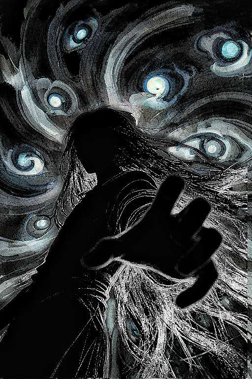

响马卦两大主要派系的研究与实践
东北 · 西北 · 传承与实操
响马牌卦，源流西北，脱胎奇门，自有发明。法用十八张，牌演九星，天地人神，变动不居。
本系列课程将东北、西北两派知识传承分别整理，配以小测与排盘工具，供学生循序研习。
本系列课程将东北、西北两派知识传承分别整理，配以小测与排盘工具，供学生循序研习。
欢迎来到：响马卦两大主要派系的研究与实践
响马卦，民间又称响马牌卦，以十八张牌为体，脱胎于奇门遁甲，融合九星、八门、八神、九宫。此法多在东北、西北一带口耳相传，故名声不显，然其理法简易，举重若轻，四盘备立，遍推八门。
东北派重中宫、头顶脚踩、四柱、层次消元与身交用神；西北派以刘唐、毛鱼、二棍、八万等牌为主，重中宫、用神落宫、对宫、走宫碰与朝向。两派同源异流，各有侧重。
本课程将两派学习路径分别拆解为若干阶段，从识牌、起卦、盘层、用神，到分类占、进阶技法、牌谱与实战，逐层推进。每阶段配有小测，便于自检；排盘工具已内嵌于本系统，方便实占验证。
学习提示
初学者不要同时混用两派牌名与起卦方向，建议先选定一派作为起点，待熟练后，再学习另外一派。需注意：「并」即「皮」，「二条」即「二棍」，只是地方叫法不同。
姜玄衣
讲师 · 响马卦传承人
自癸卯始习响马卦，遍览前贤诸篇，后承明华师传，遍历东北西北两家民间诸派所传。删繁就简，理气定规，使统系自洽。今汇两派真传歌诀、秘图与个人传习手记，纂为系列课程，以俟后学。
课程目录
东北派
- 01东北响马卦的选牌与识牌
- 02东北响马卦的起卦与行持
- 03东北响马卦的整体结构
- 04东北响马卦的基本占断思路
- 05分类占精讲
- 06进阶资料·理气内秘
- 07实战入手思路
- 08秘传流运卦思路
西北派
- 01西北响马卦的选牌与识牌
- 02西北响马卦的起卦
- 03西北响马卦的取象规律
- 04西北响马卦的演绎象法
- 05九宫象法
- 06后天卦
- 后天枢要
- 走卦名和落卦名的运用
- 07先天卦
- 碰牌十法
- 换太极法
- 单宫定象法
- 秘传活八门九星八神之法
- 一卦多占与六亲分宫法
- 分类占的基本思路
- 应期思路
- 08三盘合参
- 09十二宫终身卦思路
补充资料
- 牌谱四种
推荐学习方式
学习路径建议
建议新手先学习东北派，或者西北派的后天卦。
- 选择东北派入门：先学完东北派，再跳转到西北派的后天卦；学完后，再学西北派的先天卦。两派都掌握之后，学习三盘合参与运筹，最后学终身卦。
- 选择西北派入门：按照西北派路线循序渐进；学完之后，再回头学习东北派即可。
学习模块
请从左侧目录选择模块开始学习
本系统将东北、西北两派学习路径分别拆解为若干阶段。
东北派重中宫、头脚、四柱、层次消元与身交用神；
西北派重中宫、用神落宫、对宫、走宫碰与朝向。